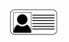
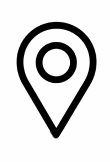

DAVID
QUINTANILLA
JIMENEZ
Estudiant Universitari en
enginyeria informàtica.
Contacte:
683590858

25374852x


25374852x
MÉS INFORMACIÓ
- Carnet de conduir, permís B.
- Vehicle propi.
- Disponibilitat total.